Para quem nunca jogou1 a 4 jogadores45 min10+Manual oficial em inglês
· Redação Elite Boardgamers
Resumo em 1 minuto
Você pega um par de peça de habitat e ficha de animal por turno, monta o seu território e vence quem somar mais pontos com os animais, pelas cartas de pontuação, e com os maiores corredores de cada habitat.
No seu turno, você pega 1 dos 4 pares do centro, encosta a peça no seu território e põe a ficha numa peça vazia que mostre aquele animal.
Fichas de pinha, ganhas nas peças-chave, deixam pegar peça e ficha de pares diferentes ou renovar as fichas do centro; as que sobram valem 1 ponto.
Cada um joga 20 turnos; pontuam os animais pelas cartas, o maior corredor de cada habitat, com bônus para o maior da mesa, e as pinhas.
Como você aprende: 3 etapas, da mesa montada à contagem de pontosLeitura do essencial: cerca de 9 min
À vista, só o essencial para jogar. O que abre com + é explicação, exemplo, exercício ou regra de caso especial: abra quando precisar.
Montar a mesa passo a passo
A montagem segue a página de preparação do manual p. 4, na mesma ordem, e as figuras vêm da ilustração da mesa montada p. 5. Os passos são iguais para 2, 3 ou 4 jogadores; o que muda é o número de peças de habitat. O modo solo tem uma regra própria, no fim desta seção.
O que vem na caixap. 3:
Componente
Quantidade
Peças de habitat
85, das quais 25 são peças-chave (peças que dão ficha de pinha; Etapa 1)
Peças iniciais de habitat
5
Fichas de animais
100: 20 de urso, 20 de alce, 20 de salmão, 20 de falcão e 20 de raposa
Cartas de pontuação de animais
21: 4 de urso, 4 de alce, 4 de salmão, 4 de falcão, 4 de raposa e 1 carta das variantes família e intermediária
Fichas de pinha
25
Saco de pano
1 (para as fichas de animais)
Bloco de pontuação
1
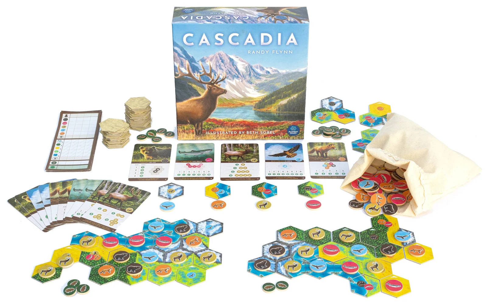
Uma partida de 2 jogadores em andamento: no centro, as 5 cartas de pontuação, os 4 pares de peça e ficha e as pilhas de peças viradas para baixo; embaixo, os dois territórios já crescidos; à direita, o saco com as fichas de animais. Imagem: Flatout Games
Ponha todas as 100 fichas de animais no saco de pano e misture bem p. 4.
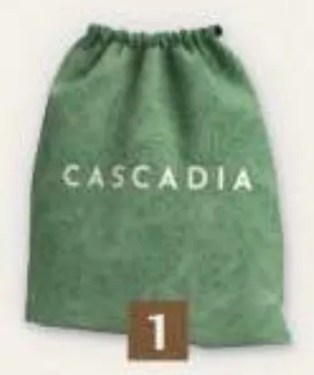
O saco de pano, que guarda as fichas de animais. Ilustração: manual oficial AEG/Flatout Games p. 5
Separe as peças de habitat pelo número de jogadores, sem olhar: 43 para 2 jogadores, 63 para 3, 83 para 4 (20 por jogador, mais 3; no solo, 43, como para 2). Embaralhe e faça pilhas viradas para baixo, quantas quiser, ao alcance de todos. As que sobraram voltam para a caixa sem ninguém ver p. 4.
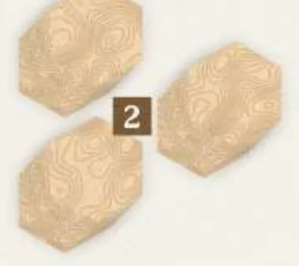
As pilhas de peças de habitat, viradas para baixo, com o verso bege. Ilustração: manual oficial AEG/Flatout Games p. 5
Escolha 1 carta de pontuação para cada um dos 5 animais e ponha as 5 no centro, à vista de todos. O resto das cartas volta para a caixa. O manual manda sortear, mas recomenda, na primeira partida, as cartas com a letra A no canto de baixo à direita p. 4. Este guia ensina as cartas A; a troca por outras está na Etapa 2 (os animais e as cartas A).
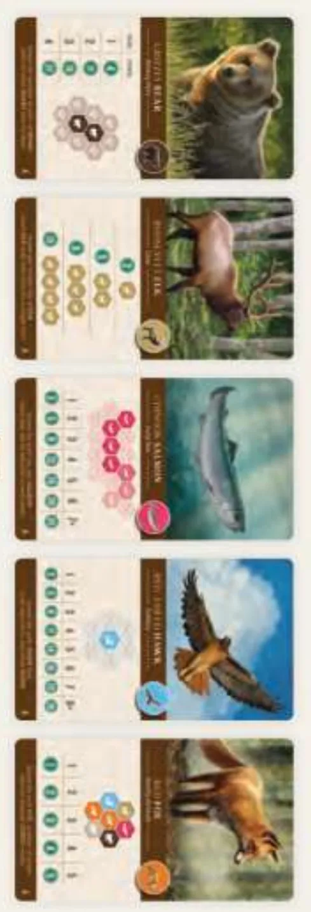
As 5 cartas de pontuação da primeira partida, uma por animal: urso, alce, salmão, falcão e raposa. Ilustração: manual oficial AEG/Flatout Games p. 5
Dê a cada jogador 1 peça inicial de habitat, sorteada, virada para cima na frente dele. Ela é o começo do território do jogador: o conjunto de peças e fichas na frente dele p. 5. É uma peça grande, com 3 hexágonos, cada um com o seu terreno e os seus animais desenhados, como nas outras peças. As que sobraram voltam para a caixa p. 4 e 5.
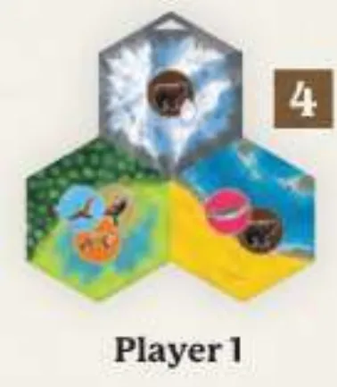
A peça inicial de um jogador: três hexágonos de habitats diferentes, unidos numa peça só. Ilustração: manual oficial AEG/Flatout Games p. 5
Vire 4 peças de habitat das pilhas e ponha no centro da mesa, viradas para cima, lado a lado p. 4.
Tire 4 fichas de animais do saco e ponha uma embaixo de cada peça, na ordem em que saíram. Agora há 4 pares, cada um com 1 peça e 1 ficha p. 4.
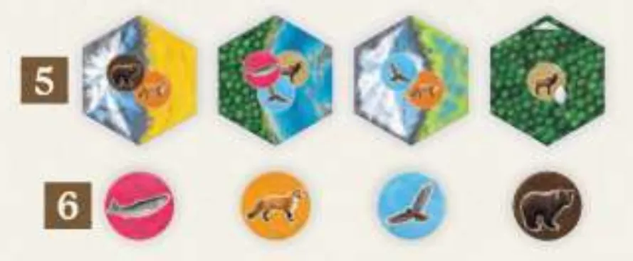
Os 4 pares do centro da mesa: em cima, as 4 peças de habitat viradas (passo 5); embaixo, as 4 fichas de animais tiradas do saco (passo 6). Ilustração: manual oficial AEG/Flatout Games p. 5
Ponha as 25 fichas de pinha ao alcance de todos. É a reserva p. 4.
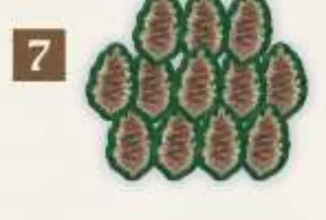
A reserva de fichas de pinha. Ilustração: manual oficial AEG/Flatout Games p. 5
Escolha quem começa: quem viu por último um dos animais do jogo, ou por sorteio. A vez segue no sentido horário p. 4 e 5.
Ninguém começa com fichas de pinha nem com fichas de animais: fora a peça inicial, tudo o que entra no seu território sai dos 4 pares do centro (p. 4 a 7). O bloco de pontuação só entra no fim p. 8.
O que muda com o número de jogadoresp. 4, 9 e 10:
Jogadores
Peças de habitat na partida
Voltam para a caixa
Turnos de cada um
Bônus do maior corredor de habitat
1 (solo)
43, como para 2
42
20
2 por habitat com grupo de 7 ou mais
2
43
42
20
2 para o maior; 1 para cada em caso de empate
3
63
22
20
3 para o maior e 1 para o segundo
4
83
2
20
3 para o maior e 1 para o segundo
Corredor de habitat é um grupo de peças ligadas pelo mesmo terreno; os pontos dele estão na Etapa 3 p. 8. Voltam para a caixa também as peças iniciais que ninguém recebeu e as cartas de pontuação que não foram escolhidas.
Antes de começar, confira: fichas de animais no saco; pilhas viradas para baixo com 20 peças por jogador, mais 3; 5 cartas de pontuação, uma de cada animal (as A na primeira partida); cada um com a sua peça inicial; 4 pares de peça e ficha no centro; pinhas na reserva; primeiro jogador escolhido.
Partida de 3 jogadores, a primeira do grupo. O que está certo?
São 20 peças por jogador, mais 3: 63 para 3 jogadores. Vai 1 carta por animal, e o manual recomenda as A na primeira partida. Ninguém começa com pinha p. 4.
Comece a jogar em 4 minutos
Meta: em 4 minutos de leitura, montar a mesa e jogar o seu primeiro turno sem abrir o manual.
A ideia do jogo
Você monta um território com peças hexagonais de habitat (montanha, floresta, campo, pântano e rio) e põe nele fichas de animais. Na sua vez, pega 1 dos 4 pares do centro, uma peça e uma ficha, e encaixa os dois no seu território. No fim, os animais pontuam pelos desenhos pedidos nas cartas de pontuação, e cada habitat pontua pelo seu maior grupo de peças ligadas. Vence quem somar mais pontos.
Monte a mesa
A montagem completa, com figuras, está na seção "Montar a mesa passo a passo", logo acima. O essencial p. 4:
Fichas de animais no saco; 20 peças de habitat por jogador, mais 3, em pilhas viradas para baixo.
1 carta de pontuação por animal (as A na primeira partida) e 1 peça inicial para cada jogador.
4 pares no centro: 4 peças viradas, cada uma com 1 ficha tirada do saco. Pinhas na reserva.
Seu primeiro turno
Olhe as 4 fichas do centro. Se as 4 forem do mesmo animal, elas saem e entram 4 novas, tiradas do saco uma a uma. Se 3 forem iguais, você pode trocar essas 3, uma vez por turno p. 6.
Pegue 1 par: a peça e a ficha que estão juntas p. 6.
Encaixe a peça encostada em pelo menos um lado de uma peça do seu território. Não vale pôr em cima de outra nem mexer nas que já estão lá. O habitat da borda não precisa combinar com o vizinho p. 7.
Ponha a ficha numa peça sua que ainda não tenha ficha e que mostre o desenho desse animal. Pode ser a peça nova ou outra. Se não houver peça possível, ou se você não quiser pôr, a ficha volta para o saco p. 7.
Reponha o centro: uma peça do topo de qualquer pilha e uma ficha tirada do saco, cada uma no lugar que ficou vazio, sem mexer nos outros pares. A vez passa no sentido horário p. 5 e 7.
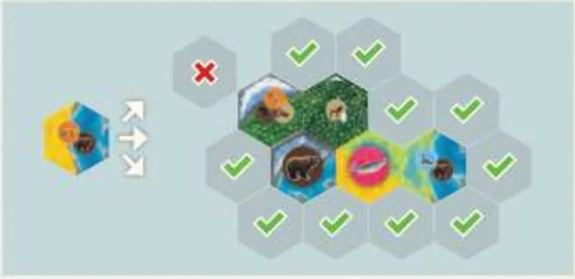
Onde a peça nova pode entrar: os sinais de certo são exemplos de espaços que dividem um lado inteiro com uma peça do território; o X é um hexágono desalinhado, que não divide um lado inteiro com nenhuma peça, e não vale. Ilustração: manual oficial AEG/Flatout Games p. 7
Ainda não precisa saber
Fichas de pinha e peças-chave: Etapa 1 (o turno e o território). Como cada animal pontua nas cartas A: Etapa 2 (os animais e as cartas A). Corredores de habitat, bônus de maioria e desempate: Etapa 3 (fim da partida e pontos). No primeiro turno, ninguém tem pinha.
Como a partida acaba
Cada jogador joga exatamente 20 turnos. Quando, no fim de um turno, não há mais peça nas pilhas para repor a que foi pega, a partida acaba na hora, e todos contam os pontos p. 8.
Prefere ver? As regras completas em vídeo. Ele complementa este guia; em caso de diferença, vale o manual.
Cascadia - Como Jogar, canal Romir Play House · abrir no YouTube
0Antes de tudo: o que é este jogoOpcional
Imagem: Flatout GamesAbrir esta seção
Cascadia é um jogo de colocação de peças e escolha de fichas para 1 a 4 pessoas, a partir de 10 anos, criado por Randy Flynn, sobre os habitats e os animais do noroeste do Pacífico, na América do Norte p. 2. A página do jogo na AEG fala em 45 minutos de partida.
Cada jogador monta o seu território, uma peça por turno, e resolve dois quebra-cabeças ao mesmo tempo. Os habitats pontuam pelo maior grupo de peças ligadas de cada terreno, o corredor de habitat. Os animais pontuam pelo formato que cada carta de pontuação pede: ursos em pares, alces em fila, salmões em corrente, falcões espalhados, raposas cercadas de vizinhos variados, nas cartas A da primeira partida p. 8 e 11.
A tensão está no par: a peça que fecha o seu rio pode vir com a ficha errada. As fichas de pinha soltam essa amarra. A interação é indireta: ninguém mexe no território do outro, mas o par que você leva sai da mesa p. 6 e 7.
1Como este guia ensinaOpcional
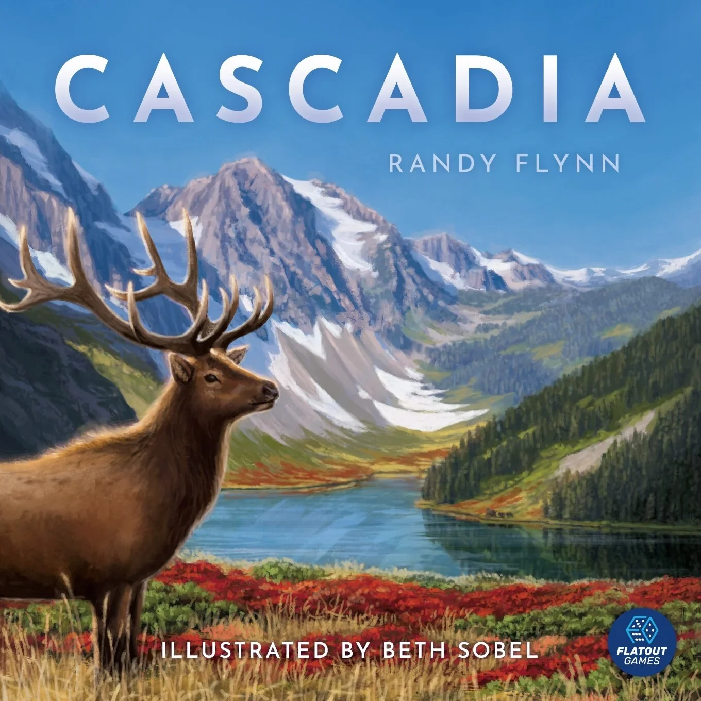
Imagem: Flatout GamesAbrir esta seção
Três etapas, cada uma uma parte real da partida: montar o território turno a turno, fazer os animais pontuarem pelas cartas A, fechar a partida e contar os pontos. Cada etapa traz Para entender (o porquê), Passo a passo (a regra exata), regras de caso especial a um toque e tarefas com ajuda que diminui: exemplo resolvido, complete e sua vez. Toque numa opção para ver a resposta e a explicação. No fim, uma avaliação diz o que reler, e uma folha de consulta vai para a mesa.
2Etapa 1: o turno e o território
Por que funciona assim
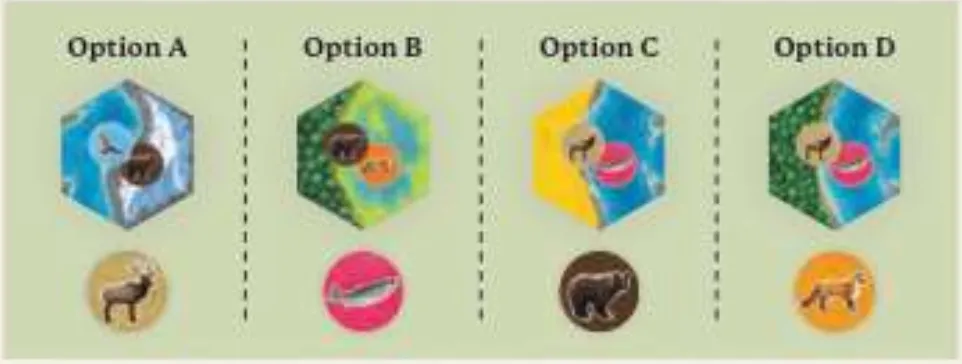
As 4 opções de um turno: cada coluna é um par, com uma peça de habitat em cima e uma ficha de animal embaixo. Ilustração: manual oficial AEG/Flatout Games p. 6
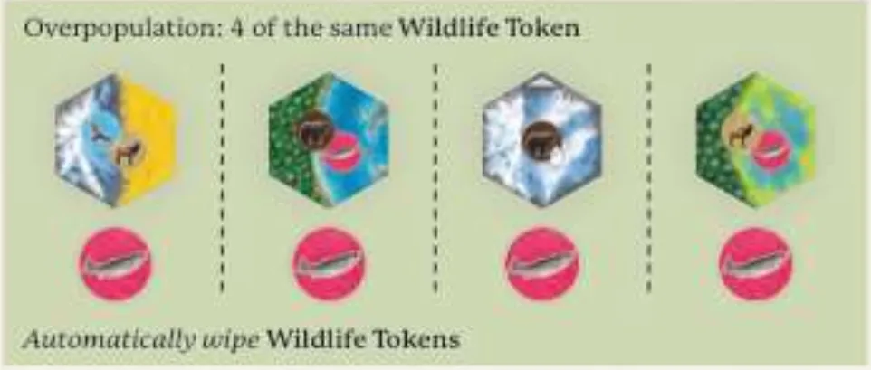
Superpopulação: as 4 fichas do centro são salmões, e por isso as 4 são trocadas sozinhas. Ilustração: manual oficial AEG/Flatout Games p. 6Sobre a edição: Girar a peçaSobre a edição: Os 3 hexágonos da peça inicial
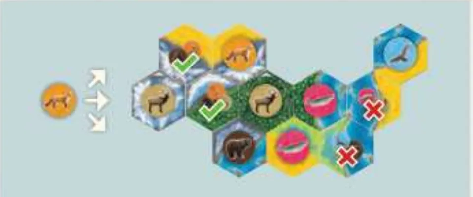
Onde pôr uma ficha de raposa: há só 2 peças possíveis, marcadas com o sinal de certo; as marcadas com X não servem. Ilustração: manual oficial AEG/Flatout Games p. 7Regra adicional: Peça-chave
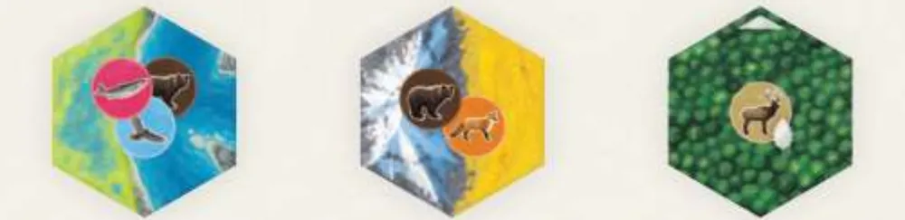
Três peças: pântano e rio, onde cabe salmão, urso ou falcão; montanha e campo, onde cabe urso ou raposa; e uma peça-chave de floresta, que só aceita o alce e dá uma pinha. Ilustração: manual oficial AEG/Flatout Games p. 8Ver um exemplo resolvidoPratique esta etapa: exercícios com respostas
3Etapa 2: os animais e as cartas A
Por que funciona assim
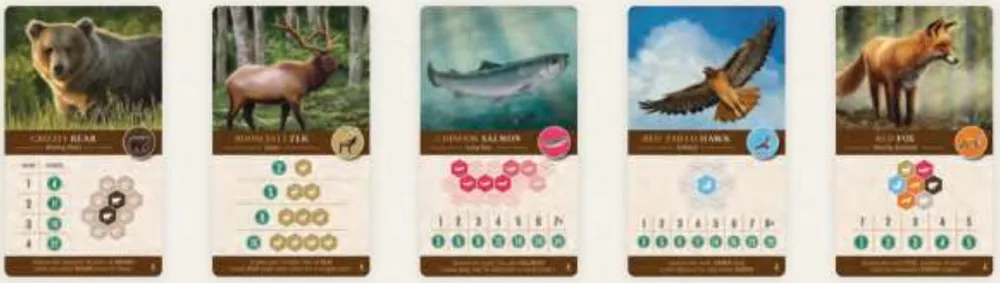
As 5 cartas A da primeira partida, como aparecem no exemplo de pontuação do manual: urso, alce, salmão, falcão e raposa. Ilustração: manual oficial AEG/Flatout Games p. 9
Valores que o exemplo do manual confirmap. 9. Leia os outros na sua carta:
Carta A
Situação
Pontos
Urso
2 pares
11
Alce
fila de 2
5
Alce
fila de 3
9
Salmão
corrente de 4
12
Falcão
4 falcões sem falcão vizinho
11
Raposa
raposa com 3 tipos vizinhos
3
Raposa
raposa com 5 tipos vizinhos
5
Sobre a edição: Fila de alces maior que a cartaSobre a edição: Os números das cartasRegra adicional: Salmão: triângulo e galhosRegra adicional: Trocar as cartas A por outras
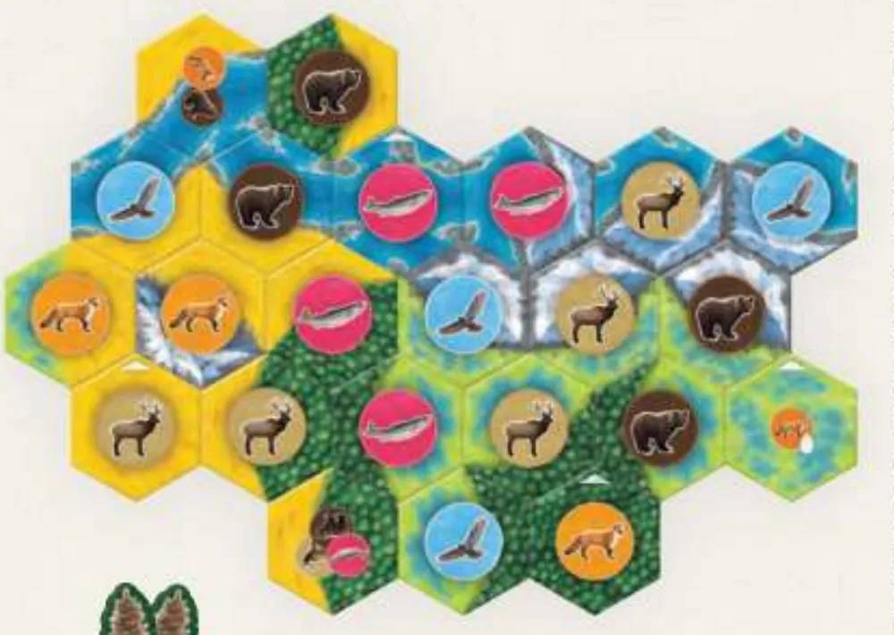
O território de Jade no fim da partida de 3 jogadores do manual, com as fichas de animais e, no canto, as 2 pinhas que sobraram. Ilustração: manual oficial AEG/Flatout Games p. 9Ver um exemplo resolvidoPratique esta etapa: exercícios com respostas
4Etapa 3: fim da partida e pontos
Por que funciona assimVer um exemplo resolvido
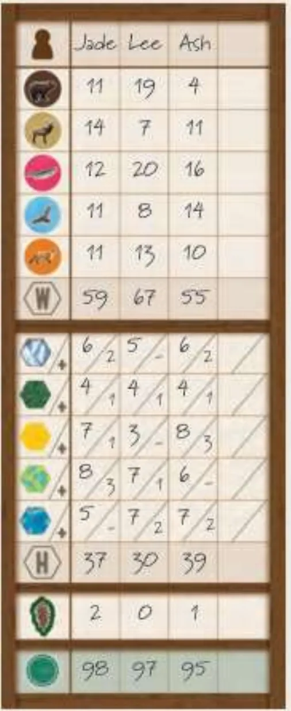
O bloco de pontuação da partida do manual: uma linha para cada animal, uma para cada habitat (o corredor e, no canto, o bônus), as pinhas e o total de Jade, Lee e Ash. Ilustração: manual oficial AEG/Flatout Games p. 9Pratique esta etapa: exercícios com respostas
5Situações especiaisOpcional
Imagem: Flatout GamesAbrir esta seçãoRegra adicional: Modo solo, o turnoRegra adicional: Variante famíliaRegra adicional: Variante intermediáriaRegra adicional: ConquistasSobre a edição: O que o manual não dizSobre a edição: Nomes deste guiaDica
6Avaliação finalOpcional
Imagem: Flatout GamesAbrir esta seção
Responda sem consultar. Cada resposta diz o que reler.
1. Partida de 4 jogadores. Quantas peças de habitat vão para as pilhas?
83: 20 por jogador, mais 3; voltam 2 para a caixa p. 4. Releia a montagem.
2. Onde a peça de habitat que você pegou pode entrar?
Encostada em qualquer peça sua; combinar o terreno não é regra de colocação p. 7. Releia a Etapa 1.
3. Você pôs uma ficha de alce numa peça-chave de floresta que mostra o alce. O que ganha?
1 ficha de pinha, ao pôr na peça-chave o animal dela p. 7 e 8. Releia a Etapa 1.
4. Com a carta A, 4 falcões, dois deles encostados um no outro. Quantos falcões contam?
2: contam só os falcões que não encostam em nenhum outro falcão p. 11. Releia a Etapa 2.
5. Partida de 3. Você tem o segundo maior pântano, empatado com outro jogador. Quanto ganha?
0: empate no segundo maior dá 0 para cada p. 9. Releia a Etapa 3.
7Para consultar durante a partida
Imagem: Flatout Games
Preparação: fichas de animais no saco. Peças de habitat: 43 (2 jogadores), 63 (3), 83 (4), em pilhas viradas para baixo. 1 carta de pontuação por animal (A na primeira partida). 1 peça inicial por jogador. 4 pares no centro. Pinhas na reserva. Sentido horário.
No seu turno:
4 fichas iguais no centro: troca automática, quantas vezes for preciso. 3 iguais: troca opcional, uma vez por turno.
Pinha (opcional, quantas tiver): pegar qualquer peça com qualquer ficha, ou renovar quantas fichas quiser.
Pegar 1 par.
Peça encostada no território; ficha numa peça sem ficha que mostre o animal, ou de volta ao saco.
Animal certo na peça-chave: +1 pinha.
Repor: peça nova (topo de qualquer pilha) no lugar da peça levada; ficha nova (do saco) no lugar da ficha levada. Nada é arrastado.
Fim: sem peça para repor no fim de um turno, a partida acaba (20 turnos para cada).
Pontos: animais pelas cartas; 1 por peça do maior corredor de cada habitat; maioria a 2: 2 (empate 1 cada); a 3 ou 4: 3 e 1 (dois empatados no maior: 2 cada; três ou quatro: 1 cada; empate no segundo: 0); 1 por pinha que sobrou. Empate: mais pinhas; depois, vitória dividida.
Regras conferidas no manual oficial em inglês da AEG e da Flatout Games (arquivo "Cascadia_BaseGame_Rulebook_Optimized", de abril de 2025, 16 páginas), baixado da página do jogo no site da AEG. A Grok Games, que lançou Cascadia no Brasil, não publica o manual em português no site dela, e por isso os nomes dos componentes aqui são tradução nossa: os da caixa brasileira podem ser diferentes. As páginas citadas são as do manual em inglês: a capa é a p. 1.